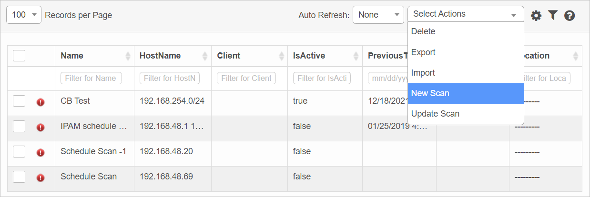
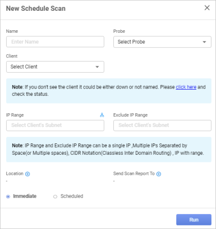

New Scheduled Scan
| 1. | While viewing the Scheduled Scans window, click New Scheduled Scan. The New Schedule Scan window displays. |


| 2. | Complete the fields referring to the information below. |
| 3. | When all selections/entries are made, click Run. |
Scheduled Scan Fields
| Field | Description |
|---|---|
| Name | Name of the scan. |
| Probe |
The required probe. For a list of all probe types, refer to the section below. |
|
Client |
Name of the Client, which can be selected in the drop-down list. |
|
IP Range |
Specifies an IP Range to include in the scan. Click the icon to scan the entire subnet mask of the corresponding IP address. When adding an IP address, the IP range can be specified in various formats: 192.168.48.1 (Single IP)
192.168.48.1 192.168.49.2 (Multiple IPs of Different Subnets)
192.168.48.1,2,3,4 (Multiple IPs of Same Subnet)
192.168.48.1-50 (A wide Range of IPs in a Subnet)
192.168.48.0/24 (Single Subnet/CIDR Notation)
192.168.48.0/24 192.168.49.0/24 (Multiple Subnets/CIDR Notation)
|
|
Exclude IP Range |
Specifies an IP Range to exclude from the scan (optional). See IP Range, above, for a list of valid formats. |
|
Location |
|
|
Send Scan Report to |
|
|
Immediate |
Select if the scan should be run immediately instead of adhering to a schedule. |
|
Scheduled |
Select if the scan should run at a set interval. Refer to Scan Frequency. |
Related Topics